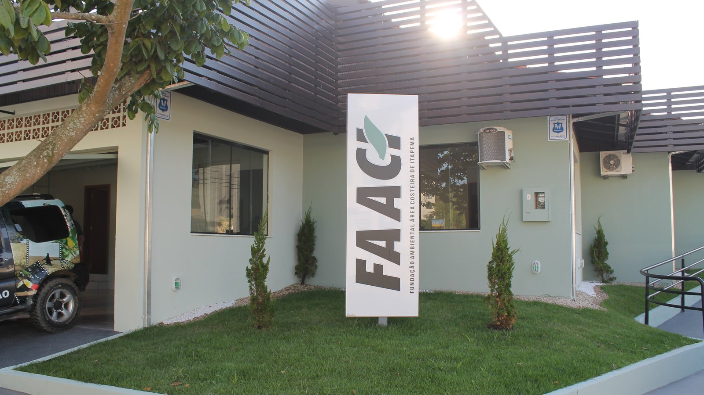

Itapema · Meio Ambiente
Itapema · Meio AmbienteEducação ambiental leva 1.100 estudantes de Itapema para dentro do Refúgio de Vida Silvestre
O outro lado do trabalho ambiental do município, fora do balcão de licenciamento.
O encontro é na quarta-feira, 2 de setembro, às 19h, no auditório da Câmara de Vereadores. A fundação vai apresentar os procedimentos que mudaram com a Lei nº 5.086/2026 e o Decreto nº 218/2026.
Em 30 segundos · Modo de Leitura, formato original Santa Informa
A FAACI convocou uma reunião pública sobre os novos procedimentos ambientais.
É na quarta-feira, 2 de setembro, a partir das 19h.
O local é o auditório da Câmara de Vereadores, na Rua 120, nº 423, Centro.
O assunto é a Lei nº 5.086/2026 e o Decreto nº 218/2026.
Os dois textos reorganizam os procedimentos ambientais do município.
Valem para construções, empreendimentos e atividades.
O convite é para projetistas, construtoras, incorporadoras, contadores e proprietários.
A Prefeitura não anunciou inscrição prévia para participar.
A FAACI fica na Rua 106, nº 165, e atende pelo (47) 3267-1485 e pelo (47) 3267-1486.
Meio AmbientePublicada em Redação Santa Informa

A Fundação Ambiental Área Costeira de Itapema, a FAACI, marcou uma reunião pública para apresentar os novos procedimentos administrativos ambientais do município. O encontro é na quarta-feira, 2 de setembro, a partir das 19h, no auditório da Câmara de Vereadores, na Rua 120, nº 423, no Centro. A convocação saiu pela Prefeitura nesta quinta-feira, 27.
As regras novas vêm da Lei Municipal nº 5.086/2026 e do Decreto Municipal nº 218/2026. Segundo a Prefeitura, os dois textos reorganizam os procedimentos ambientais em Itapema, e isso alcança construções, empreendimentos e atividades no município. A reunião serve para apresentar essas alterações de forma direta a quem lida com elas no balcão.
A FAACI é o órgão que analisa e licencia, dentro de Itapema, o que tem impacto ambiental. É por ela que passa o processo de quem vai construir, de quem vai abrir uma atividade e de quem precisa de autorização para mexer em vegetação. Quando muda a lei e o decreto que organizam esse caminho, muda o roteiro de todo mundo que entra na fila.
O convite é aberto, mas tem público bem definido: profissionais da área ambiental, representantes da construção civil, incorporadoras, construtoras, escritórios de contabilidade e proprietários interessados. Ou seja, quem protocola processo, quem assina projeto e quem paga a conta da obra. A presidente da FAACI, Luciana Saramento, disse que a reunião "é uma oportunidade para aproximar a FAACI dos profissionais, empreendedores e da comunidade, apresentando de forma clara as mudanças".
Itapema constrói muito e constrói rápido. Prédio novo, reforma, terraplenagem, poda de árvore e abertura de atividade comercial passam, de um jeito ou de outro, pela análise ambiental do município. Quando o procedimento muda, quem não fica sabendo protocola do jeito antigo e volta para o fim da fila. Duas horas numa quarta à noite podem economizar semanas de vaivém. Vale principalmente para o pequeno: a construtora grande tem escritório de despachante, o proprietário que vai levantar uma casa não tem.
Quem não conseguir ir tem o caminho de sempre. A FAACI fica na Rua 106, nº 165, no Centro, e atende pelos telefones (47) 3267-1485 e (47) 3267-1486.
O resumo de 30 segundos está no topo e a versão completa é o texto acima. Aqui ficam as três leituras da casa sobre o mesmo assunto.
Clara, a otimista
Órgão ambiental que chama construtora, projetista e contador para explicar a regra antes de cobrar é órgão que quer processo andando. Isso não é comum, e merece ser dito.
E o horário ajuda. Às 19h dá para ir depois do expediente, sem perder dia de trabalho. Quem projeta e quem constrói em Itapema tem tudo para sair de lá com menos dúvida do que entrou.
Seu Prudêncio, o criterioso
Merece atenção o que não foi dito. O anúncio fala em reorganizar procedimentos, mas não diz o que muda em prazo, em taxa nem em documento exigido. Quem vai à reunião precisa chegar com a pergunta pronta, porque o material prévio não foi publicado.
Vale acompanhar também a entrada em vigor. Lei e decreto já estão numerados e datados de 2026, então é provável que já estejam valendo. Se estiverem, existe processo protocolado no formato antigo esperando análise, e alguém vai precisar dizer o que acontece com ele.
Uma sugestão útil para a FAACI: gravar a reunião e publicar a apresentação no site. Auditório tem tamanho, quarta-feira à noite não serve para todo mundo, e informação de licenciamento é daquelas que a pessoa precisa reler. Dito isso, convocar reunião pública para explicar mudança de regra é a postura certa. Muito órgão só avisa quando indefere.
Caco, o sarcástico
Reunião pública para explicar os novos procedimentos ambientais. Traduzindo: mudou tudo de novo, apareça.
É às 19h no auditório da Câmara. Não é todo dia que a construção civil de Itapema senta junto sem estar disputando terreno.
E leve caneta. Vai ter número de lei, número de decreto e número de protocolo, e nenhum deles cabe na memória.
Fontes: Prefeitura de Itapema, notícia publicada em 27 de agosto de 2026 com o título "FAACI promove reunião pública sobre novos procedimentos ambientais em Itapema", informando a reunião de 2 de setembro a partir das 19h no auditório da Câmara de Vereadores, na Rua 120, nº 423, Centro, a apresentação das alterações trazidas pela Lei Municipal nº 5.086/2026 e pelo Decreto Municipal nº 218/2026 na reorganização dos procedimentos administrativos ambientais para construções, empreendimentos e atividades, o público convidado de profissionais da área ambiental, construção civil, incorporadoras, construtoras, escritórios de contabilidade e proprietários, a declaração da presidente da FAACI, Luciana Saramento, e o endereço e os telefones da fundação na Rua 106, nº 165, (47) 3267-1485 e (47) 3267-1486.
Itapema · Meio AmbienteO outro lado do trabalho ambiental do município, fora do balcão de licenciamento.
 Itapema · Habitação
Itapema · HabitaçãoO tamanho da obra que vai passar por essa mesma análise ambiental.
 Itapema · Legislativo
Itapema · LegislativoAs outras regras de imóvel e de atividade que mudaram na cidade neste mês.